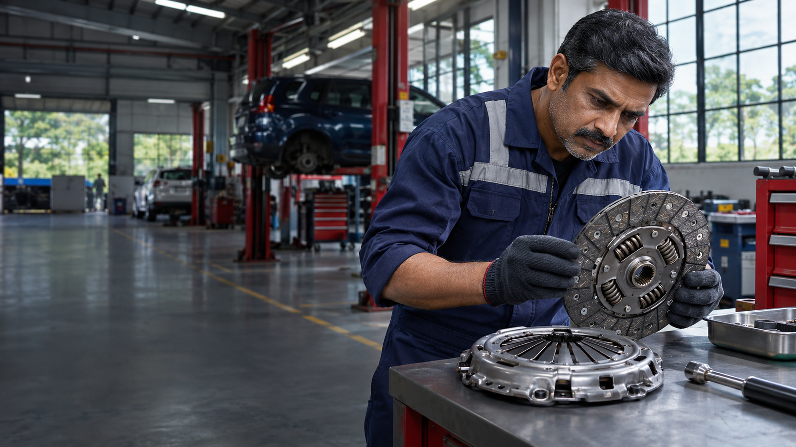
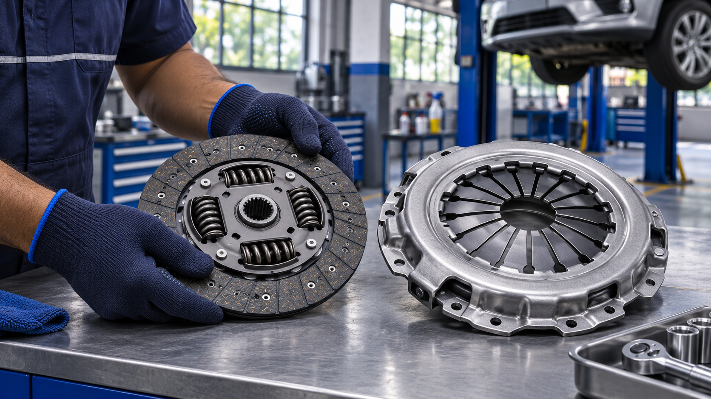
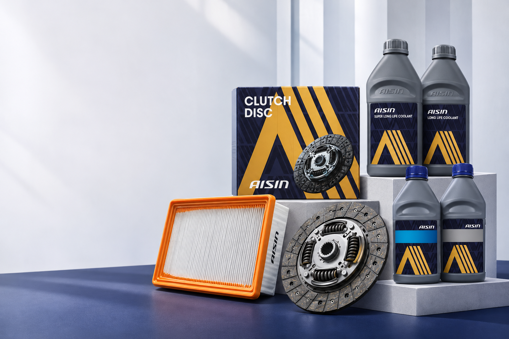
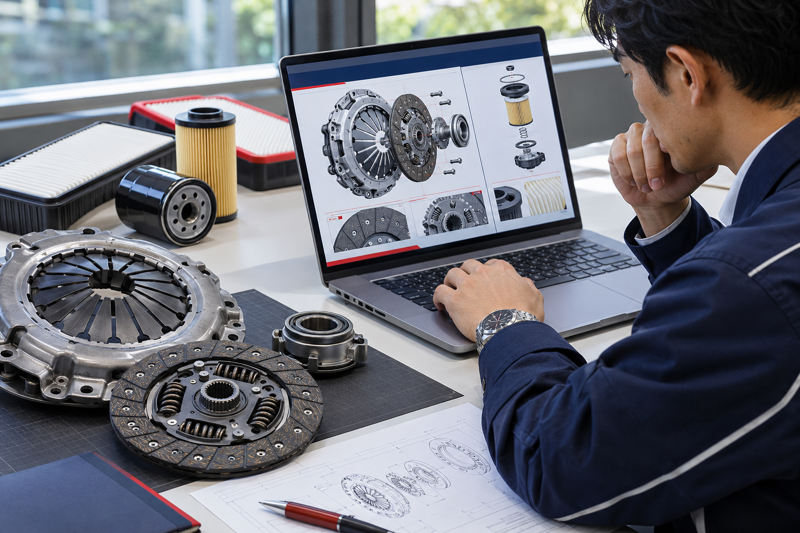
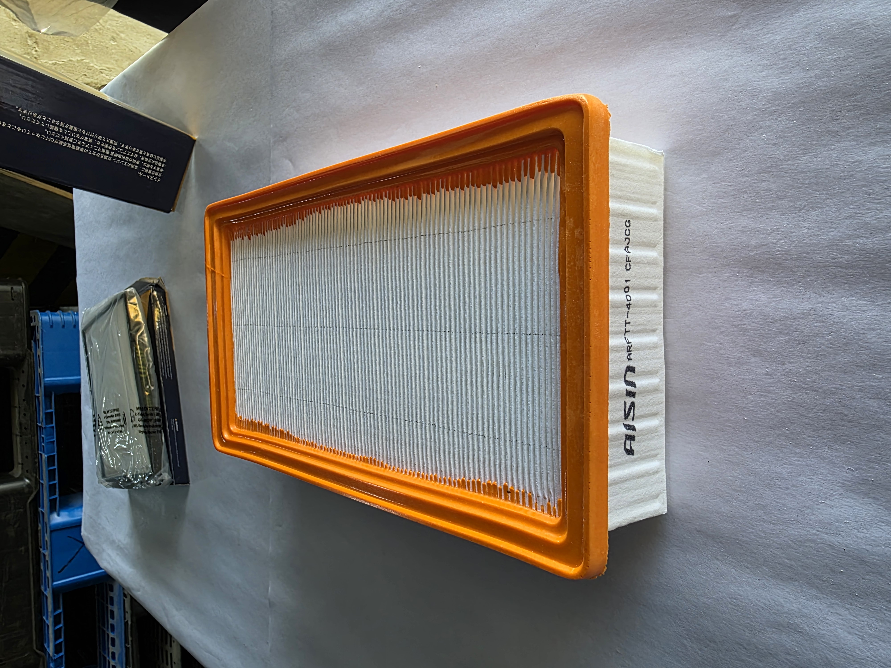
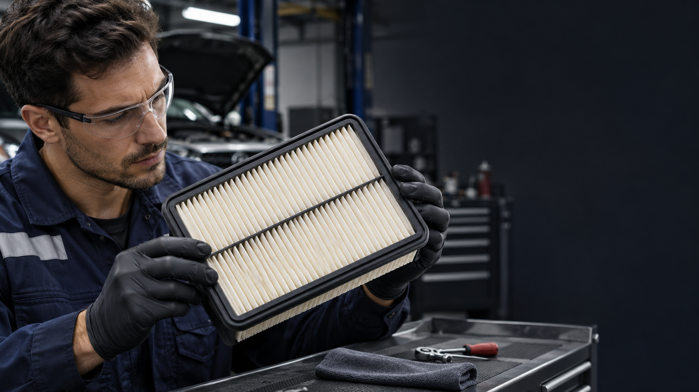
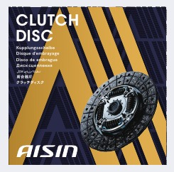

AISIN ASK Aftermarket India
Product range
Explore the supplied range through six core aftermarket categories.

Product family
Range updates
Why AISIN ASK
AISIN Aftermarket India brings established automotive expertise closer to India’s replacement market.
Discover AISIN ASK
About AISIN ASK
AISIN Corporation develops and supplies advanced technologies and high-quality products across powertrain, drivetrain, brake systems and aftermarket parts.
At AISIN Aftermarket India, this global experience supports reliable solutions for workshops and drivers in the local replacement market.

Downloads and technical information
Direct access to supplied product leaflets and application lists for faster, more confident product decisions.
Support built around you
Choose the path that best matches your requirement.
News & Events

Product range
Review clutch, filter, coolant, fluid, suspension and belt solutions available from AISIN ASK.
Explore products
Product updates
For current product availability and company announcements, contact the AISIN ASK team directly.
Enquire with AISIN ASK
Technical information
Browse the supplied leaflets and application lists for key categories.
Explore downloadsProduct information
Access the supplied premium coolant leaflet and supporting product information.
View coolant resourcesDistributor and bulk enquiries
Connect with the sales team about distribution or bulk product requirements. Applications remain subject to review.
Contact AISIN ASK
Choose the relevant team and describe your requirement. The enquiry stays in this preview until an approved recipient is connected.